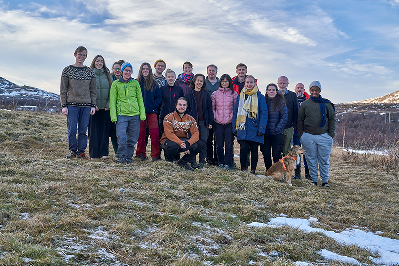

Courses
We offer hands-on training on best practice methods and technologies to make research more open, reproducible and transparent. Our courses and workshops are centred around the life-cycle of data from planning, managing, collecting, curating, analysing, publishing, storing, sharing and reusing data. They are aimed at PhD students as well as early-career researchers in ecology, who produce their own data (i.e. collect data in the field/lab), use data from others (i.e. databases) or both.
Upcoming courses and workshops
Open, Reproducible and Transparent Science for PhD students in 2026.
Past courses and workshops
OS course 2025, Hjerkinn, Norway
The 2025 Open, Reproducible and Transparent Course in Ecology was held again at Hjerkinn between the 10th and 15th of November. This year we had 21 students participating in the course. The international group was from institutions in Norway, Sweden, Finnland, Island, UK, Northern Ireland, Austria, and Ghana. The teachers included experts on different topics from GBIF Norway (UiO), NTNU, NINA, and UiB.
The whole week was dedicated to teaching and learning about the data life cycle. We started with a general introduction to Open Science,tools and approaches, and continued with topics on data handling, repositories, publishing and reuse, reproducible workflows, and analysis. The course was a mix of lectures and hands-on practical exercises. The students got an introduction to GBIF, Darwin Core, and biases in GBIF data. We also covered best practice in data analysis, reporting results, and systematic reviews and meta analysis. For the first time, we also discussed using AI in data publishing and coding. Finally the students were also introduced to tools for more reproducible workflows including quarto, GitHub, and targets. In the middle of the week we took a well deserved break and went for a short hike to Vålåsjøhøe. This was essential to clear our heads and continue the data wrangling and coding for the rest of the week. On the last day, all the students had the opportunity to apply what they have learnt to their own data and work.
After a whole week of discussions and coding we all left Hjerkinn satisfied. Hopefully, everybody went home with a new toolkit to apply in their daily data management and coding to support more open and reproducible ecological science.
Thank you for the wonderful week!

OS course 2024, Hjerkinn, Norway
The 2024 Open, Reproducible and Transparent Science in Ecology was held at Hjerkinn again between the 6.- 11. November. This year, we had an international group of 13 students from Scandinavia (Norway, Finland, and Denmark/Greenland), Switzerland and the UK.
The students were interested and engaged in learning how to wrangle data, write code, execute functions, and learning how to make an R package. The course curriculum also contains reproducible workflows, using tools to improve reproducibility in their own work, such as quarto, git/GitHub and targets. We had invited guest lecturers to talk about GBIF, Darwin Core data standards and what it takes to meet the FAIR data standards. One evening we conducted an exercise, where the students screened articles in ecological journals, searching for openly available data and code to reproduce the analysis. The result was eye-opening for the students in that most data was available, however the analysis could rarely be reproduced due to lack of availability of code. Mid-week, we organized a hike to Vålåsjøhøe to get some fresh are and clear our heads. After the hike, we got a presentation from Roy Andersen who works at the Villreinsenter at Hjerkinn. He presented the ecology and status of the reindeer in Norway and the work the Villreinsenter does to protect the reindeer. On the last day, the students got the opportunity to work on their own projects, applying new approaches they have learned.
After five days, we left Hjerkinn tired and satisfied, full of ideas, motivation and inspiration from the new tools and skills to improve how to do science.

OS course 2023, Hjerkinn, Norway

In November 2023, the Open Science course was held at Hjerkinn, located between Oslo and Trondheim. Everybody made their way slowly up the mountain. The journey from Oslo took an hour longer, because of a missing bridge and a “bus for tog” replacement. The weather at Hjerkinn was sunny and we entered a winter wonderland. Not only the beauty took away our breath, as the temperature was far below 0 °C. An we walked though deep snow to our accommodation.
Our international students this year were from Scandinavia (Norway, and Denmark), and Europe and Asia (Belgium, Switzerland, Italy, and Thailand). This year one supervisor from a student that took the course last year attended the course to be able to keep up with their students. Also, a cat and a dog were part of the team.
Every day we quickly ran to our lecture room before freezing, as this required a few steps outside. The students were very interested and engaged and learned how to wrangle data, write code, execute functions, and even learned how to make a package. They learned about reproducible workflows, using tools to improve reproducibility in their own work, such as quarto, git/GitHub and targets. Also, they learned about GBIF, Darwin Core data standards and what it takes to meet the FAIR data standards. One evening we had a fun exercise, where we went through journals searching if the authors provided data and code for their studies and analysis. While the work was fun and the students did not want to stop, the results was disappointing, as we did not find a lot of data and code that was accessible. Mid week, we visited the Villreinsenter at Hjerkinn and afterwards hike through deep snow to a little top and had a deserved break.
After five days, we left Hjerkinn tired and satisfied; full of ideas, motivation and newly aquired tools and skills to improve our work and workflows.
Managing Ecological Data workshop, NØF 2023 (NMBU)
We organized a workshop at the NØF 2023 conference at NMBU on Managing ecological data: Best practices for data sharing and data reuse based on transparent and reproducible workflows. The aim of the workshop was to illustrate what data management is and why it is important. We showed best practice in managing ecological data for sharing your own data, applying FAIR principles, and for reusing existing datasets. The workshop included hands-on training tools for sharing data and making reproducible documents.
The workshop was aimed at ecologists that create and/or reuse ecological data from early career researchers with little experience with data management to more experienced researchers. The hands-on training will be based on selected case studies, and implemented in statistical program R.
Organized by Aud H. Halbritter (University of Bergen), Erlend B. Nilsen (Norwegian Institute for Nature Research and Nord University, and project leader of Living Norway Ecological Data Network) and Matt Grainger (Norwegian Institute for Nature Research).
OS course 2022, Alpine Research Station Finse in Norway

In November, we held a course on Open, Reproducible, and Transparent Science in Ecology at the Biological Research Station at Finse. The course was a collaboration between BioCEED (University of Bergen), GBIF Norway and Living Norway with teachers from NINA, NTNU, UiO and UiB. The course was aimed for PhD students and offered hands-on training, skills and knowledge on Open Science, data collection, data handling, data standards, data repositories and publishing, reproducible workflows and best practice in data analysis.
On Monday, 14th of November a group of students and teachers made their way slowly up the mountain to Finse. The students were an international group from Scandinavia (Norway, Sweden, Denmark), Spain, Eastern Europe, Eurasia and Asia (Ukraine, Belarus, Georgia, Armenia, India, Tajikistan). It was unusually warm for the season, and there was no snow, which was lucky for those who were not prepared for the alpine environment.
While the temperature was dropping and the wind was howling, the students were wrangling data, writing code, and executing functions. They recorded frozen species and made their own data collection to understand the importance of also recording metadata (the data around the data). They learned why reproducible workflows, using tools such as quarto, git/GitHub and targets can benefit your future self, increase collaboration and make your research more robust. And finally, they learned about GBIF, Darwin Core data standards and what it takes to meet the FAIR data standards.
Five days later, loaded with a toolbox full of new skills the students made their way slowly down the mountain. They were happy and tired and showed a strong motivation to apply the new skills and knowledge in their own work and spread the word about Open Science among their colleagues and supervisors.